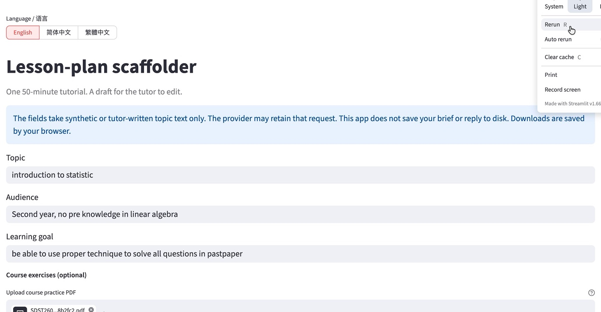
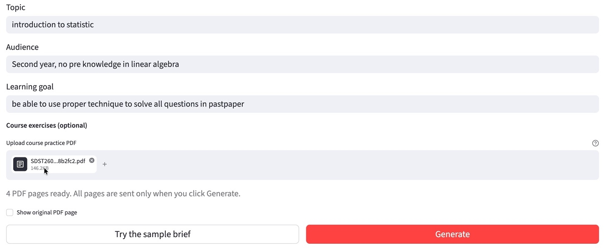
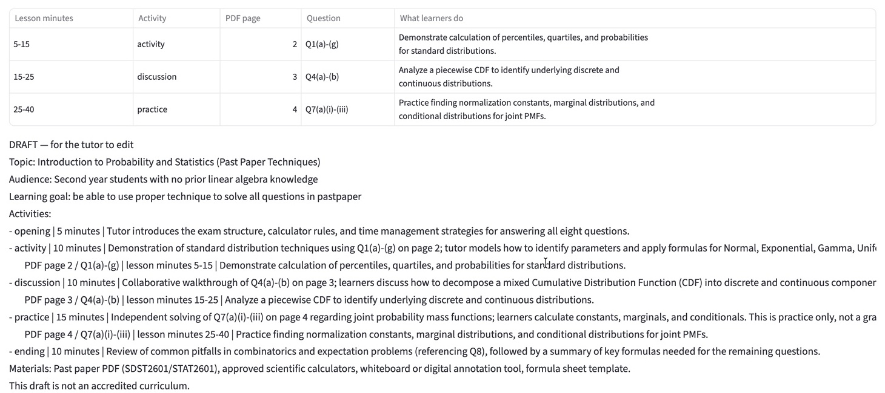

Set the learning target
Enter a topic, audience and learning goal. Attach a practice PDF when you want existing questions included.
AILT9019 · GROUP PROJECT
Turn a teaching brief and optional practice PDF into a structured, 50-minute lesson draft. Keep the tutor in charge of the final plan.
Repository access is restricted to invited collaborators.
FROM BRIEF TO DRAFT
Enter a topic, audience and learning goal. Attach a practice PDF when you want existing questions included.
Input checks and model review precede generation. The app validates structure and timing, with a bounded retry if the draft fails validation.
Review the draft, question references and pacing. Download Markdown and adapt the material before teaching.



SYSTEM OVERVIEW
WHAT THE TEAM BUILT
The application uses Alibaba Cloud’s Qwen model through an OpenAI-compatible client. Streamlit supplies the interface; PyMuPDF renders PDF pages; OpenCC supports Traditional Chinese conversion.
A fixed tutorial format, 50-minute total, draft labelling and practice-only boundaries make the output suitable for tutor review.
PDF pages are rendered as images for the model. The output schedules original page and question references, including when and why to use them.
Fixed-term checks and model review screen content. English, Simplified Chinese and Traditional Chinese interfaces, safe error messages, offline samples and regression tests support everyday use.
EVIDENCE & EVALUATION
The examples below were tested on 14 November 2026 at revision 69b4549.
For first-year students, with the goal of tracing a small recursive call and explaining its return value.
A validated outline was returned.
A four-page practice document was supplied for a lesson on probability mass functions and moment generating functions.
119 offline tests passed at revision 46e08d6 on 18 November 2026. These cover validators, refusal paths, PDF handling, generation flow and interface behaviour using controlled replies. See repository CI for results on newer commits.
An automated test used the topic “how to build a class roster” and a goal referring to an “official syllabus”. The fixed-term gate refused the request before the generator was called. This is offline test evidence, not a live-model refusal result.
The tool cannot judge whether the activities suit a particular class, or tell whether a name belongs to a real student.
The tutor still needs to read the plan and decide what to change.
TRY IT YOURSELF
Use Python 3.13 for the steps below.
After starting the app, use Try the sample brief without a key. For live generation, configure API_KEY in your local .env, then enter a brief and select Generate. Never commit your key.
macOS / Linux
git clone https://github.com/Ryan06101/AILT9019-Group49---Lesson-plan-scaffolder.git
cd AILT9019-Group49---Lesson-plan-scaffolder
python3 -m venv .venv
source .venv/bin/activate
pip install -r requirements.txt
cp .env.example .env
streamlit run app.pyThe app prints its local address when it starts.
Windows (Command Prompt)
git clone https://github.com/Ryan06101/AILT9019-Group49---Lesson-plan-scaffolder.git
cd AILT9019-Group49---Lesson-plan-scaffolder
py -m venv .venv
.venv\Scripts\activate
pip install -r requirements.txt
copy .env.example .env
streamlit run app.pyGROUP 49
Yu Ruihan · Cai Zongyang · Tang Jincheng · Meng Ziheng